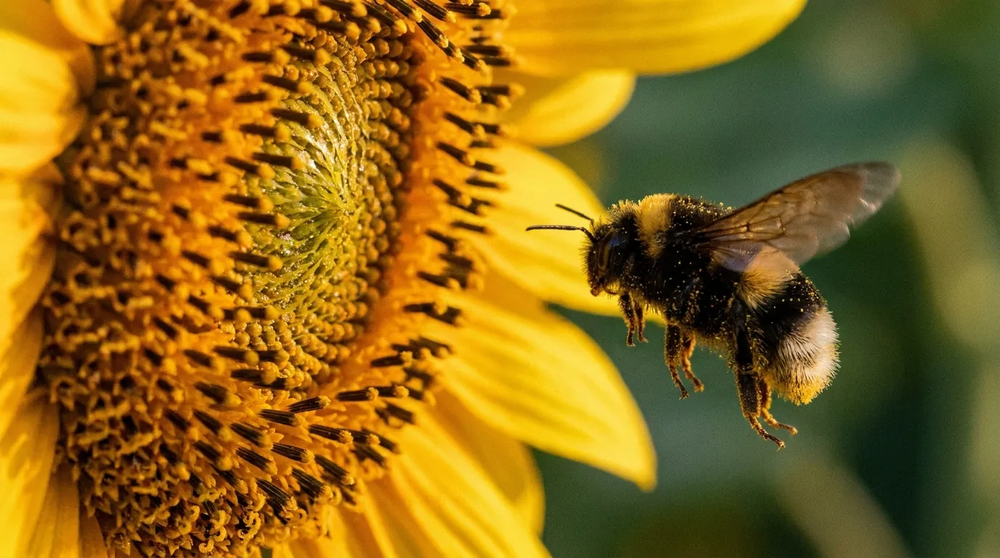

Работа в изоляторах
Гибкое решение для специальных условий
На участках с групповыми изоляторами площадью от 10 до 500 м² мы используем шмелей для опыления.
В отличие от пчёл, шмели работают в замкнутых помещениях, а также при более низких температурах — от +10 °C, в пасмурную погоду и при сильном ветре.
Минусом является более высокая стоимость опыления и риск укусов персонала, который должен ежедневно посещать участки. В планах компании — начать собственное производство шмелиных семей в высокотехнологичных ульях-боксах.